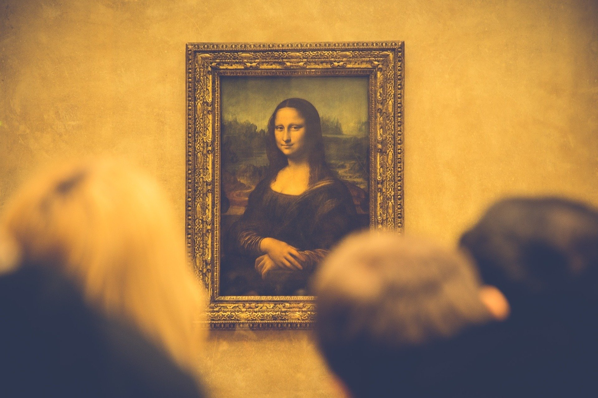
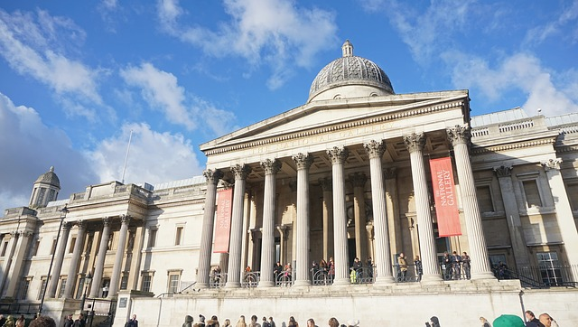
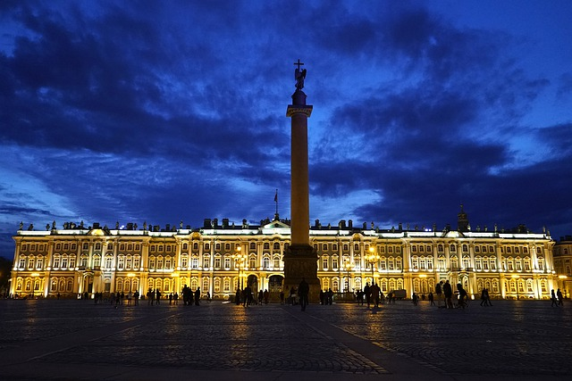

Museu Britânico - Londres(Inglaterra)

O Museu foi criado em 1753 e abriu definitivamente ao público no dia 15 de janeiro de 1759. As origens do Museu Britânico estão relacionadas ao físico e colecionador Hans Sloane, que desejava que a sua coleção de mais de 80.000 itens se mantivesse após a sua morte. Entre os objetos da coleção havia mais de 40.000 livros e antiguidades procedentes da Grécia, Roma, Egito, Oriente Médio e América.
A primeira localização do Museu Britânico foi a Casa Montagu, uma mansão do século XVI que começou a ficar pequena devido ao rápido crescimento das coleções, tanto pelas compras realizadas pelo museu quanto pelas diferentes doações.
Em 1782, o museu aumentou consideravelmente a coleção de peças de origem grega e romana e, depois disso, em 1801, o museu adquiriu uma grande quantidade de antiguidades egípcias, entre as quais se inclui a impressionante Pedra de Roseta (graças à qual foi possível traduzir os hieróglifos egípcios). Em 1823, o rei George IV doou a biblioteca do seu pai completamente, por isso o edifício do museu começou a ficar pequeno.
Em 1852 foi concluída a construção do novo edifício do museu, instalado em sua localização anterior e que se mantém até os dias de hoje.
Em 1887, devido à falta de espaço, a coleção de objetos naturais foi trasladada ao Museu de História Natural e em 1973 a Biblioteca Britânica se tornou independente do museu.
Os mais de sete milhões de objetos procedentes de todos os continentes que o museu possui estão organizados segundo seu lugar de procedência. O museu é tão grande que para visitá-lo sem pressa seria necessário dedicar mais de um dia inteiro, mas, para ver o mais importante, uma manhã pode ser suficiente.
Uma das partes que vale a pena destacar é o Grande Átrio situado no centro do museu, um enorme espaço com um teto de cristal no qual está a sala de leitura da Biblioteca Britânica.
Ao longo das sete diferentes salas é possível encontrar qualquer tipo de objeto, desde porcelana chinesa até antiguidades pré-históricas e medievais, ou moedas e medalhas de diferentes períodos. As partes mais chamativas do museu são a seção do Antigo Egito (a melhor depois da do Museu Egípcio do Cairo), e a da Antiga Grécia.
Os horários de funcionamento são:
Todos os dias, das 10:00 às 17:30 horas. Sexta até as 20:30 (algumas galerias).
Fechado: 1º de janeiro, Sexta-feira Santa, 24, 25 e 26 de dezembro
Entrada: Gratuita.
Palácio de Inverno(Hermitage) - St.Petesburg(Rússia)

Simplesmente um dos melhores museus do mundo. O Museu Hermitage de São Petersburgo é a metáfora perfeita da guinada que o czar Pedro, o Grande, pretendeu conferir à Rússia. Uma mudança visando o Ocidente, seus costumes, cultura e artes.
O imenso complexo composto por seis palácios e pavilhões junto ao rio Neva compreende museus, teatro e escritórios governamentais. Fundado em 1764 por Catarina, a Grande, ele hoje ocupa parte dos aposentos dos czares, como o Palácio de Inverno. A rica coleção original composta por pinturas de Rembrandt, Hals, Veronese e Van Dyck, entre outros, foi expandida ao longo dos séculos. Da queda dos czares ao comunismo, passando pela nova economia, o Hermitage ganhou a reputação de ser o grande museu russo e um dos poucos que podemos chamar de imperdíveis no mundo. Prova disso foi a aquisição de pinturas de mestres impressionistas e modernistas como Cézanne, Renoir, Picasso e Matisse. Seu imenso acervo é somente parcialmente exibido em seus suntuosos salões rococó, uma atração a parte.
Compre o ingresso antecipadamente via website para evitar as grande filas. Há dois tipos de bilhete, um válido apenas para as coleções do museu e outro para outros edifícios do complexo.
Site Oficial - Aqui

2020 MULTI VIAGENS - TODOS OS DIREITOS RESERVADOS